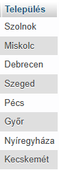
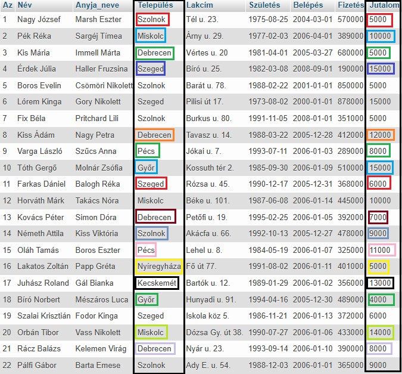
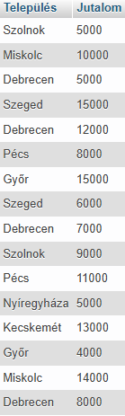

SELECT DISTINCT
A SELECT DISTINCT utasítás csak különböző (egyedi) értékek visszaadására szolgál egy adatbázisból.
A visszaadott adatokat egy eredménytáblában, az úgynevezett eredményhalmazban tárolja a rendszer.
Példa:
SELECT DISTINCT Település
FROM dolgozók;


Látható, hogy az eredménytábla a kiválasztott mezőből áll. Ha több sorban (rekord) is ugyanaz az érték szerepel ugyanabban az oszlopban (mező), akkor csak a legelső előfordulását veszi figyelembe.
Példa:
SELECT DISTINCT Település,
Jutalom
FROM dolgozók;


Látható, hogy az eredménytábla a kiválasztott mezőkből áll. Ha több sorban (rekord) is ugyanazok az értékek szerepelnek ugyanazokban az oszlopokban (mező), akkor csak a legelső előfordulását veszi figyelembe.
Most a két mezőt (oszlop) egyszerre kezeli!
Tehát ismét lehet egy mezőben (oszlop) két ugyanolyan érték az eredménytáblában!